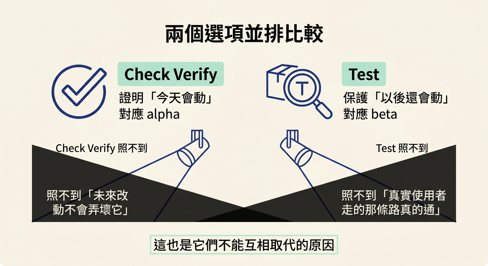
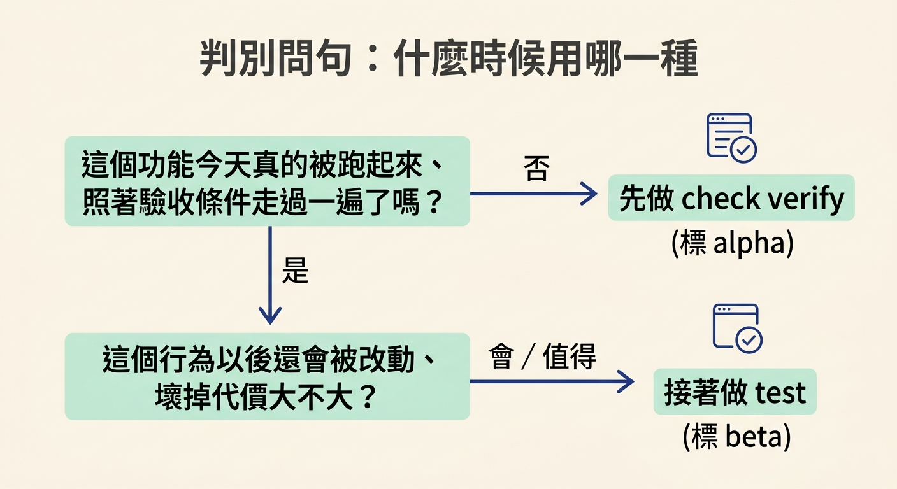
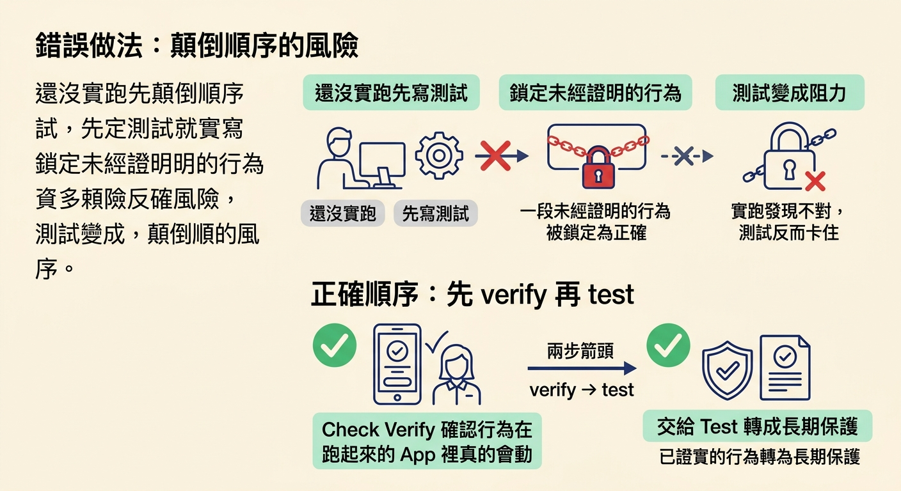

判斷一個功能該用哪一種證明、為什麼全綠的測試不能取代實跑、實跑也不能取代測試，並記住順序是先 verify 再 test。
上一節介紹了兩種證明：check verify 回答「今天能不能跑」，test 回答「以後還會不會跑」。弄清楚它們各自是什麼之後，實際動手時馬上會遇到一個更現實的問題——我現在手上有一個功能要收尾，時間只夠做一件事，那該做哪一件？
這裡有兩股力量在拉扯。一邊是「先把東西真的跑起來證明它會動」的急切，另一邊是「趁現在把重要行為用測試鎖住、免得未來被改壞」的未雨綢繆。很多人會想挑一個比較划算的做，但課程的立場很明確：它們不是二選一的替代方案。
These two steps do not replace each other.
（這兩個步驟不能互相取代。）
所以真正的決定不是「選哪一個」，而是「先做哪一個、以及各自要做到什麼程度」。這一節就把這個決定拆成可以照著判斷的幾個問題。
要做出選擇，先得看清楚兩者到底差在哪。把它們放在一起，差異就很具體：
| check verify | test | |
|---|---|---|
| 回答的問題 | 功能今天能不能跑 | 功能以後還會不會跑 |
| 怎麼做 | 打開 app，對照驗收條件實跑一遍 | 把重要行為寫成可重複執行的檢查 |
| 產物 | 一次性的當場證據 | 會反覆執行的長期保護 |
| 對應 tier | alpha | beta |
| 它證明不了什麼 | 未來改動不會弄壞它 | 真實使用者走的那條路真的通 |
注意最後一列。它提醒我們：每一種證明都有一塊照不到的角落，而那塊角落正好是另一種證明的守備範圍。這也是它們不能互相取代的原因。

要決定現在該做哪一種，可以依序問自己兩個問題。第一個問題關於「有沒有被證明」：
這個功能，我今天真的把它跑起來、照著驗收條件走過一遍了嗎？
如果答案是否定的，那就先做 check verify。因為在還沒證明「它今天會動」之前，你不確定自己保護的到底是什麼——有可能你寫下的測試，鎖住的是一段根本不成立的行為。第二個問題關於「值不值得保護」：
這個行為以後還會被改動嗎？如果它壞掉，代價大不大？
如果答案偏向「會」或「值得」，那就接著做 test，把這條重要的行為寫成測試。課程的說法是「turns the important ones into the lasting protection」——是重要的那些才需要變成保護，不是全部都寫。舉例來說，留言 pin 的編號規則、未讀計數的計算方式，這類會被反覆改動的資料邏輯，就特別值得寫進測試。

順序不是隨口規定的。課程把理由收在兩句很清楚的話裡：
First, run check verify and prove the feature works in real time. And then run test and protect that behavior as the code changes.
第一步是當場證明功能會動，第二步才是把這段已被證實的行為保護起來。先把真實行為確認下來，再拿它當作測試的基礎，測試保護的才是一段真的會動、也真的值得留住的東西。課程最後用四個字把這個順序釘住——
Verify first, then test.
（先 verify，再 test。）
反例一：以為一份全綠的測試就等於功能沒問題。課程特別指出這個直覺是錯的，因為測試可能不完整、可能測錯了東西，或漏掉真實使用者會走的那條路徑：
A green test suite doesn't always prove that the real feature works. Because tests can be incomplete, or test the wrong thing, or miss the path that a real user takes.
你可以寫出一個永遠會通過的測試，但如果它測的不是真實使用者會碰到的情境，那它在保護的東西根本不對。所以測試再綠，還是需要實跑這一關來確認真實行為。
反例二：以為今天跑得動，未來就自動安全。課程把另一半也講明了：證明功能今天會動，並不會保護它免於下個月被改壞。一個當下運作良好的功能，隔週就可能被一段看似無關的改動悄悄弄壞——這正是 test 存在的理由。
還有一種情況值得留意：如果先寫測試、而且誤把一段還沒驗證過的行為當成正確行為鎖進去，之後就算實跑發現它其實不對，那份測試反而會變成阻力。這也是「先 verify 再 test」這個順序的實際價值。

所以遇到一個要收尾的功能，可以照這個順序檢查：
check verify，證明它在跑起來的 app 裡真的會動（alpha）。test，把重要的那幾條寫成會反覆執行的檢查（beta）。check verify與test是兩種不同的證明，回答不同的問題，因此不能互相取代。要判斷該做哪一種，先問「這個功能今天真的被跑過一遍了嗎」——沒有就先做check verify（alpha）；再問「這段行為以後會被改動、值得保護嗎」——值得就接著做test（beta）。順序不能顛倒：先 verify、再 test，因為你必須先確認行為真的會動，才值得把它變成日後的保護。反過來也要記得，一份全綠的測試既不能保證真實功能會動（測試可能不完整、測錯東西、漏掉真實使用者的路徑），實跑也不能保證未來不會被改壞。
到這裡，三種 tier 的詞彙與兩種證明的分工就完整了：prototype 是建好並自檢、alpha 是建好且被證明、beta 是建好、被證明且被保護。拿到任何功能時，你都可以先問它現在需要哪一種證明，再決定要跑哪一個 skill。